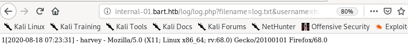
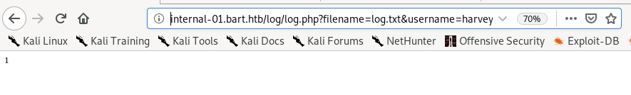
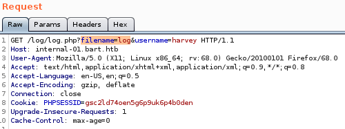
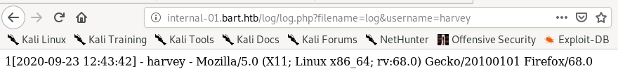

internal-01.bart.htb/log/log.php?filename=log.txt&username=harvey
when we navigate to the pagehttp://internal-01.bart.htb/log/log.php?filename=log.txt&username=harvey 
we see that the page displays harvey's username but also displays OUR OWN User-agent
 , lets mess with it and see if we can inject remote code execution into the log.php file and run it
, lets mess with it and see if we can inject remote code execution into the log.php file and run it 

we get a strange response of only 1, but we do see that there is a filename pointing to some file located on the server, so lets mess around with that
if we switch the filename parameter equal to the file log instead of log.php...

we see the log output of the log.php get request we sent from before! and even more interesting....

we see our user-agent was saved in the log form


Meaning, we may be able to poison the log.txt file on Bart's server by altering our user-agent field when sending Get requests to the log.php file!